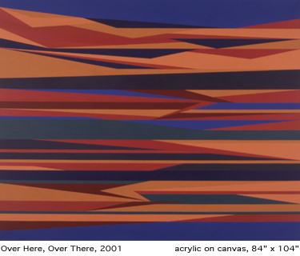
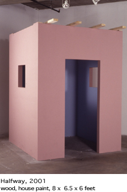

Odili
Donald Odita at Florence Lynch and Riva
Odili Donald Odita has earned a reputation for his colorful acrylic
abstract paintings, in which slightly irregular bands, elongated triangles,
stretched-out trapezoids and other off-kilter geometric forms extend
horizontally across the support. While Odita's works have roots in patterned
geometric abstraction, their choppy contours suggest both turbulence
and organic growth. They also pull in hints of big landscapes, big skies,
textile decorations and "traditional" clothing from Odita's
native Nigeria. (He now lives in the U.S.) Odita's is a complex, poignant
approach to this kind of abstraction, and he successfully melds Western
and African influences.
These simultaneous exhibitions arose from a recent trip Odita took to
Nigeria and provided a welcome opportunity to see not only a new selection
of paintings but also other works- notably, drawings and sculptures-that
flesh out this artist's enterprise. At
Florence Lynch, small, seemingly rapid drawings on paper of figures
and objects, in tempera, charcoal, pencil and pastel, comprised a visual
diary of an expatriate's return. In Queen Mother (2001), a forceful,
solitary woman is framed by an orange half oval in the background. Scattered
glitter at the sides adds a touch of exuberance and bedazzlement. In
Gentlemen (2001), a splotch of turquoise on a pensive male figure's
shirt and the red and orange of a diagonally striped headband are precisely
the kinds of colors that Odita uses to such advantage in his paintings.
Several works, particularly Burning (2001), in which a reddish mass,
suggesting fire and malevolence, is suspended in front of a male figure's
chin, evoke the internecine violence and severe government repression
that have plagued Nigeria for years. Other works are far more whimsical
and lyrical. For an exacting painter like Odita, showing such drawings
was a risk, but it worked. Coupled with a small selection of his paintings,
they gave you a real sense of just how much Odita's experience of Nigeria
affects his esthetic.
Odita's exhibition at Riva included three sculptures of modest interest.
One
was a wooden structure, akin to a small house on which construction
has stopped (Halfway, 2001). Pink on the outside and blue on the inside,
it refers to similar, half-finished structures Odita saw in Nigeria
but equally conjures a bare-bones bus shelter or a broken prison cell.
The real stars here, however, were wonderful, large-scale paintings
that have an unusual mix of ultracool geometric patterning, landscape-based
serenity and visual agitation. With Horizon (2001), various horizontal
beiges, pinks, russets, and a single line of blue suggest sweeping arid
expanses and a lake or a seashore. With startling oranges and deep blues,
Over Here, Over There (2001) is a perfect fusion of garish neon advertisements
and African textiles.
-Gregory Volk
Gregory Volk / Art In America |